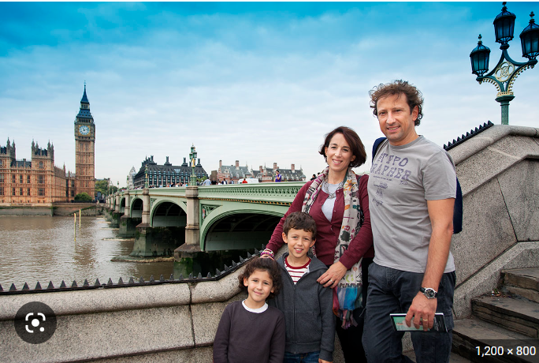
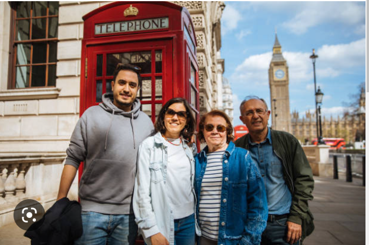

London
The London familiar to international visitors is a much smaller place than that. Tourist traffic concentrates on an area defined by the main attractions, each drawing between one and seven million visitors in the course of the year: Buckingham Palace, the British Museum, the National Gallery, Westminster Abbey, Madame Tussaud’s waxwork collection, the Tower of London, the three great South Kensington museums (Natural History, Science, and Victoria and Albert), and the Tate galleries. In scale, the London most tourists visit resembles the metropolis as it was in the late 18th century, a city of perhaps 10 square miles (26 square km) explorable on foot in all directions from Trafalgar Square.•
Cultural life
Centres of the arts
Artistic creativity flourishes in the diversity of rival centres of patronage. Royal patronage created the Royal Albert Hall, which every summer provides the setting for one of the world’s greatest music festivals, the Henry Wood Promenade Concerts, known popularly as the Proms. Municipal patronage, first of the London County Council and later of the Greater London Council, turned former industrial and warehousing land on the Waterloo riverbank into the South Bank arts complex, which combines the Royal Festival Hall, Queen Elizabeth Hall, and Hayward Gallery. The National Film Theatre and the Royal National Theatre are also there.
Top cutural places
- Queen Elizabeth Hall
- Imperial War Museum
- London Aquarium
- Royal Festival Hall
Popular cuisines
- .Full English Breakfast
- .Pie and Mash
- .Fish and Chips
- .Spaghetti Bolognese
you wanna live like a local
join us for a day or two
meet shelly, our local host
local host name : shelly
local host number:0000000000Pictures from our happy clients

